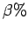

Nächste Seite: Erzeugung der Oberflächenpunkte Aufwärts: Gitterzellen zu den Ecken Vorherige Seite: Einschub: Inhalt

der Eckliste enthielt.Abb. 4.3 stellt zweidimensional die Entwicklung der Würfelliste dar. Der dunkelgrüne Würfel wird in diesem Fall erzeugt, weil seine obere linke Ecke in der zuvor erzeugten Eckliste stand, also ,,innerhalb der Flüssigkeit`` liegt. Beim Durchsuchen der pending_list (blau) werden der linke Nachbar (Zellindex - 1) und der obere linke Nachbar (Zellindex - Zeilenlänge - 1) gefunden und der erste Würfel der zweiten Zeile (blau gestrichelt) aus der pending_list entfernt. Bei den zwei gefundenen Nachbarn wird an der entsprechenden Ecke (rote Pfeile) der selbe Verweis auf die aktuelle Ecke gespeichert wie bei dem erzeugten Würfel. Weil nach Durchlaufen der pending_list feststeht, dass der obere Nachbar (hellgrün) nie erzeugt wurde, wird er jetzt erzeugt und erhält die Eckinformation des aktuellen Würfels. Die beiden grünen Würfel werden der pending_list angefügt und es wird der nächste Eckeintrag gelesen.